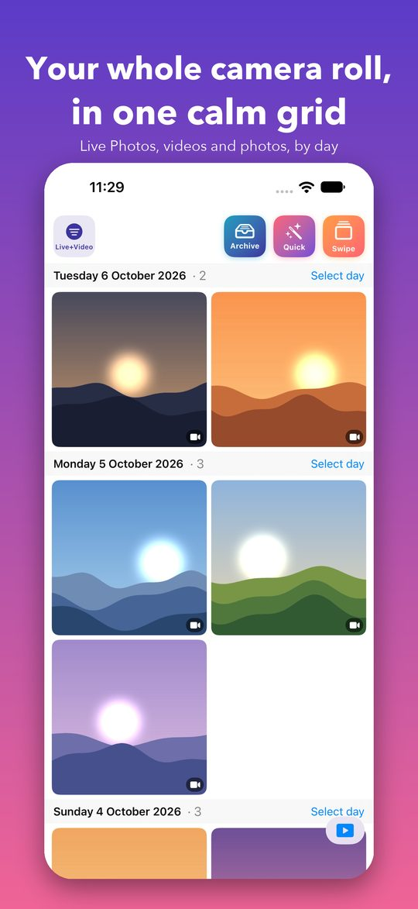
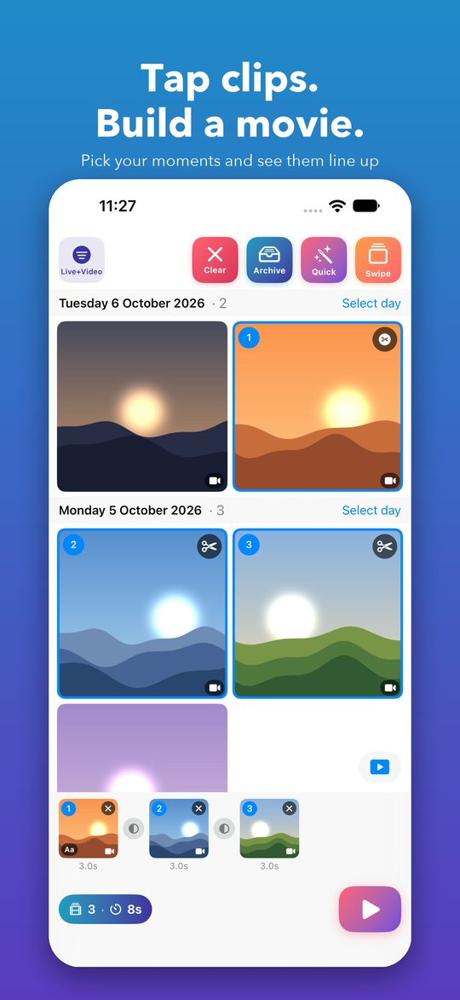
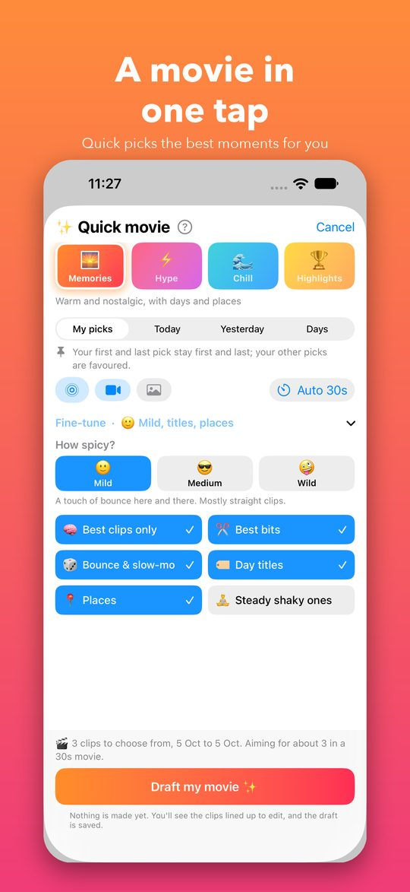
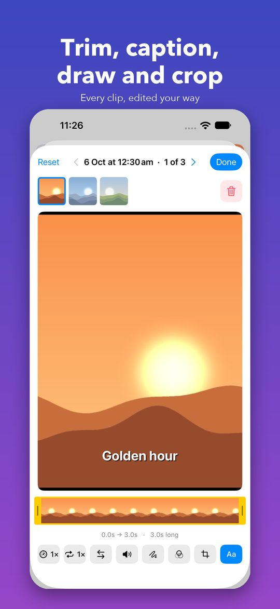
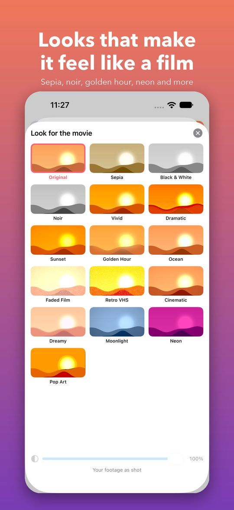
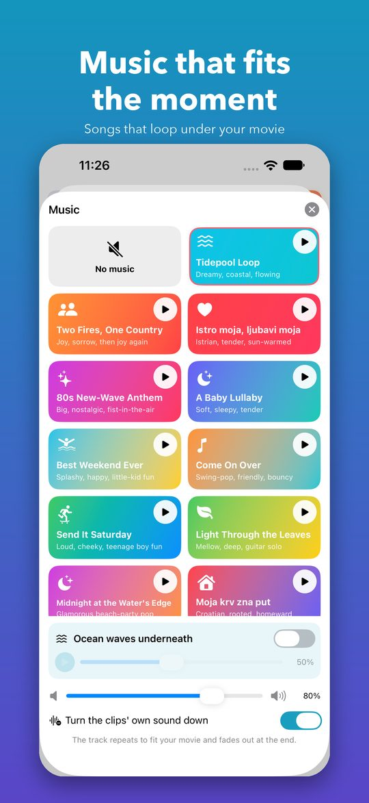
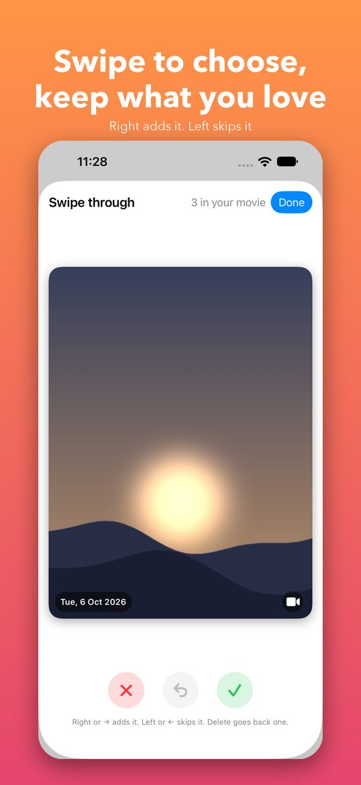
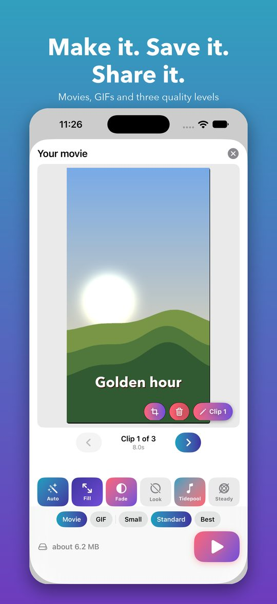

Pick a vibe, tap a few clips, and Spool lines up a finished movie with titles, places, transitions and music. It works on your iPhone and your Mac, and everything stays on your device.
Get help or say hello







Screens show sample artwork, not real photos.
Memories, Hype, Chill or Highlights. Spool chooses the best clips, skips look-alikes and fits the length you want.
Trim with a filmstrip, change speed, bounce or repeat clips, draw on them, crop, and add captions with emoji and places.
Sepia, noir, golden hour and more, plus a different transition at every join.
A built-in library of songs and moods that loop under your movie, with ocean waves if you like.
Reads your library as you scroll, so hundreds of thousands of photos stay quick. Pick from the whole library or from one of your albums.
No account, no tracking, nothing uploaded. Your photos are only read, never changed or deleted.
iPhone (iOS 17 or later) and Mac (macOS 14 or later).